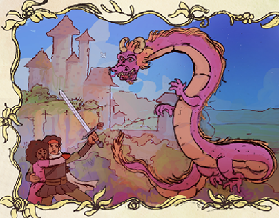

Descubra Novas Músicas

Jin-Kali, Prince Of Psychopathy
Artista: Nodachi
Gênero: Metal industrial

Guillotine
Artista:Stray From The Path
Gênero: Nu Metal

The Optimist
Artista: Skinless
Gênero: Death Metal

Baixa Temperatura
Artista: Big Rush
Gênero: Plug, Trap

Ain't it Funny
Artista: Danny Brown
Gênero: Hip Hop
Hypnosis
Artista: Sleep Token
Gênero: Metal Industrial